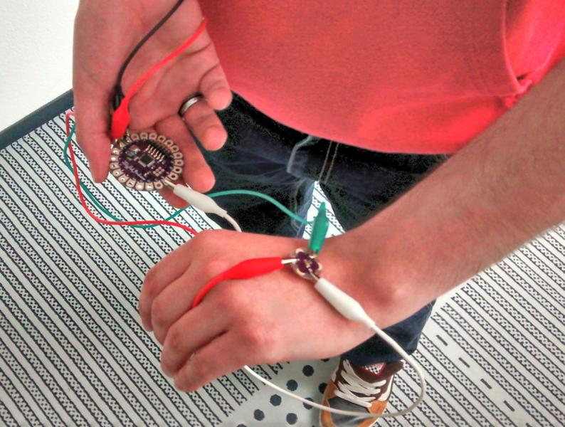
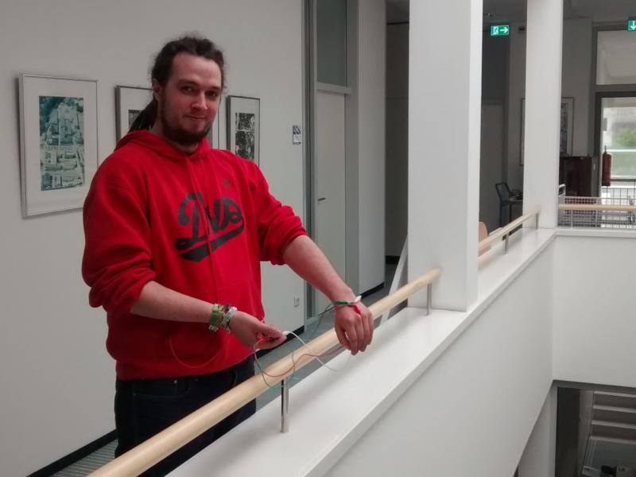

<!doctype html>
<html lang="en">

	<head>
		<meta charset="utf-8">

		<title>reveal.js - The HTML Presentation Framework</title>

		<meta name="description" content="LightWatch - Week 2">
		<meta name="author" content="Bengt Lüers, Marius Wybrands">

		<meta name="apple-mobile-web-app-capable" content="yes" />
		<meta name="apple-mobile-web-app-status-bar-style" content="black-translucent" />

		<meta name="viewport" content="width=device-width, initial-scale=1.0, maximum-scale=1.0, user-scalable=no">

		<link rel="stylesheet" href="revealjs/css/reveal.min.css">
		<link rel="stylesheet" href="revealjs/css/theme/simple.css">

		<!-- For syntax highlighting -->
		<link rel="stylesheet" href="revealjs/lib/css/zenburn.css">
		<link rel="stylesheet" href="revealjs/lib/css/print/pdf.css">
		<!-- If the query includes 'print-pdf', include the PDF print sheet -->
		<script>
			if( window.location.search.match( /print-pdf/gi ) ) {
				var link = document.createElement( 'link' );
				link.rel = 'stylesheet';
				link.type = 'text/css';
				link.href = 'css/print/pdf.css';
				document.getElementsByTagName( 'head' )[0].appendChild( link );
			}
		</script>

		<!--[if lt IE 9]>
		<script src="revealjs/lib/js/html5shiv.js"></script>
		<![endif]-->
	</head>

	<body>

		<div class="reveal">

			<!-- Any section element inside of this container is displayed as a slide -->
			<div class="slides">


<section data-markdown>
    <script type="text/template">
# LightWatch

&nbsp;

A wearable light display for body stress.


&nbsp;

Bengt Lüers, Marius Wybrands
    </script>
</section>

<section data-markdown>
    <script type="text/template">
## 3D Printed Flora Band

Make a flexible motion-activated LED arm/wrist band.


    </script>
</section>

<section data-markdown>
    <script type="text/template">
## Initial Attempt


    </script>
</section>

<section data-markdown>
    <script type="text/template">
## Hello, World!


    </script>
</section>

<section data-markdown>
    <script type="text/template">
## Light Sensor Hardware


    </script>
</section>

<section data-markdown>
    <script type="text/template">
## Light Sensor Test Code

	#include <EEPROM.h>

	const int ledPin = 13;
	
	void setup() {
	  Serial.begin(4800);
	  
	  int value;
	  for (int i = 0; i < 1024; i=i+2) {
		value = EEPROMReadInt(i);
		Serial.println((String) i + " " + (String) value);
	  }
	  Serial.println("-------------------------------");
	}
    </script>
</section>

<section data-markdown>
    <script type="text/template">

## Light Sensor Recording Code

	int address = 0;
	void loop() {
	  if(address >= 1024)
		return;
		
	  sensorValue = analogRead(A0);
	  EEPROMWriteInt(address, sensorValue);
	  address = address + 2;
	  
	  Serial.println((String) sensorValue + " " + (String) EEPROMReadInt(address));

	  delay(3000);
	}

    </script>
</section>


<section data-markdown>
    <script type="text/template">
    
## EEPROM helper functions

	void EEPROMWriteInt(int p_address, int p_value) {
		  byte lowByte = ((p_value >> 0) & 0xFF);
		  byte highByte = ((p_value >> 8) & 0xFF);

		  EEPROM.write(p_address, lowByte);
		  EEPROM.write(p_address + 1, highByte);
	}

	unsigned int EEPROMReadInt(int p_address) {
		  byte lowByte = EEPROM.read(p_address);
		  byte highByte = EEPROM.read(p_address + 1);

		  return ((lowByte << 0) & 0xFF) + ((highByte << 8) & 0xFF00);
	}

    </script>
</section>


<section data-markdown>
    <script type="text/template">
## Light Sensor Test Run





    </script>
</section>

<section data-markdown>
    <script type="text/template">
## Light Sensor Test Results


    </script>
</section>

<section data-markdown>
    <script type="text/template">
## LED Test Code

	#include <WS2812.h>
	int LED_COUNT = 12;
	WS2812 LED(LED_COUNT);

	void setup() {
		LED.setOutput(9); // Digital Pin 9
		Serial.begin(9600);

	  cRGB color;
	  for (int LED_ID = 1; LED_ID <= 12; LED_ID++) {
		color.b = LED_ID * 21;
		color.g = LED_ID * 21;
		color.r = LED_ID * 21;
		LED.set_crgb_at(LED_ID - 1, color);
	  }
	  LED.sync();
	}

    </script>
</section>

<section data-markdown>
    <script type="text/template">

## LED Test Results (1)


    </script>
</section>

<section data-markdown>
    <script type="text/template">

## LED Test Results (2)


    </script>
</section>

<section data-markdown>
    <script type="text/template">

## LED Test Results (3)


    </script>
</section>

<section data-markdown>
    <script type="text/template">

## LED Test Results (4)


    </script>
</section>

<section data-markdown>
    <script type="text/template">

## LED Test Results (5)


    </script>
</section>


<section data-markdown>
    <script type="text/template">

## Pulse Sensor


    </script>
</section>

<section data-markdown>
    <script type="text/template">

## GSR Sensor


    </script>
</section>

<section data-markdown>
    <script type="text/template">

# Ende

    </script>
</section>


<!--- -------------------------- -->


			</div>

		</div>

		<script src="revealjs/lib/js/head.min.js"></script>
		<script src="revealjs/js/reveal.min.js"></script>

		<script>

			// Full list of configuration options available here:
			// https://github.com/hakimel/reveal.js#configuration
			Reveal.initialize({
				controls: true,
				progress: true,
				history: true,
				center: true,

				theme: Reveal.getQueryHash().theme, // available themes are in /css/theme
				transition: Reveal.getQueryHash().transition || 'none', // default/cube/page/concave/zoom/linear/fade/none

				// Parallax scrolling
				// parallaxBackgroundImage: 'https://s3.amazonaws.com/hakim-static/reveal-js/reveal-parallax-1.jpg',
				// parallaxBackgroundSize: '2100px 900px',

				// Optional libraries used to extend on reveal.js
				dependencies: [
					{ src: 'revealjs/lib/js/classList.js', condition: function() { return !document.body.classList; } },
					{ src: 'revealjs/plugin/markdown/marked.js', condition: function() { return !!document.querySelector( '[data-markdown]' ); } },
					{ src: 'revealjs/plugin/markdown/markdown.js', condition: function() { return !!document.querySelector( '[data-markdown]' ); } },
					{ src: 'revealjs/plugin/highlight/highlight.js', async: true, callback: function() { hljs.initHighlightingOnLoad(); } },
					{ src: 'revealjs/plugin/zoom-js/zoom.js', async: true, condition: function() { return !!document.body.classList; } },
					{ src: 'revealjs/plugin/notes/notes.js', async: true, condition: function() { return !!document.body.classList; } }
				]
			});

		</script>

	</body>
</html>
